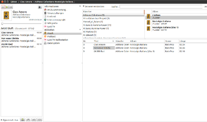
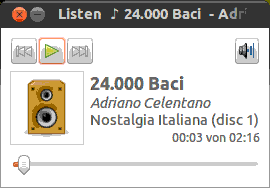
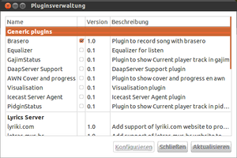

Listen Audioplayer
Archivierte Anleitung
Dieser Artikel wurde archiviert, da er - oder Teile daraus - nur noch unter einer älteren Ubuntu-Version nutzbar ist. Diese Anleitung wird vom Wiki-Team weder auf Richtigkeit überprüft noch anderweitig gepflegt. Zusätzlich wurde der Artikel für weitere Änderungen gesperrt.
Zum Verständnis dieses Artikels sind folgende Seiten hilfreich:
Listen  ist ein in Python programmierter Audioplayer, der sich gut in GTK-basierende Oberflächen wie GNOME, Xfce oder LXDE einfügt. Listen ermöglicht ein komfortables Verwalten und Abspielen von großen Musiksammlungen ebenso wie das einfache Herunterladen und Anhören von Radiostreams oder Podcasts. Dabei kann der Player mittels Plugins stark erweitert und flexibel angepasst werden. Er bietet damit ähnlich umfangreiche Möglichkeiten wie z.B. Amarok für KDE.
ist ein in Python programmierter Audioplayer, der sich gut in GTK-basierende Oberflächen wie GNOME, Xfce oder LXDE einfügt. Listen ermöglicht ein komfortables Verwalten und Abspielen von großen Musiksammlungen ebenso wie das einfache Herunterladen und Anhören von Radiostreams oder Podcasts. Dabei kann der Player mittels Plugins stark erweitert und flexibel angepasst werden. Er bietet damit ähnlich umfangreiche Möglichkeiten wie z.B. Amarok für KDE.
Hinweis:
Die Entwicklung sowie Betreuung dieser Anwendung wurde 2010 eingestellt. Nutzer sollten dies bei der Verwendung bedenken und besser einen anderen AudioPlayer wählen.
Funktionsübersicht:
Audiodateien abspielen
Musikarchiv- und Playlisten-Verwaltung
automatischer Album-Coverdownload
Playlisten bearbeiten, exportieren oder als Audio-CD brennen
zusätzliche Informationen (von Wikipedia in verschiedenen Sprachen) anzeigen
Songtexte des aktuellen gespielten Titels anzeigen
transparentes OSD-Menü zur Titeleinblendung
automatische Erhebung der Lieblingslieder, -alben und -künstler
Überblend- bzw. Ausblendeffekte (auch bekannt als „crossfading“ sowie „gapless playback“)
Dynamische Playlisten
Weiterhin unterstützt Listen:
iPod-MP3-Player
Download und Speichern von Podcasts
WebRadio
Last.fm - Senderwiedergabe funktioniert nicht, allerdings werden sie "gescrobbelt"
 und
und
Installation¶
Das Programm ist bis einschließlich Ubuntu 12.04 in den offiziellen Paketquellen enthalten und wird mit den folgenden Paketen installiert [1]:
listen (universe)
python-tunepimp (optional)
python-musicbrainz2 (optional)
 mit apturl
mit apturl
Paketliste zum Kopieren:
sudo apt-get install listen python-tunepimp python-musicbrainz2
sudo aptitude install listen python-tunepimp python-musicbrainz2
Bedienung¶
Listen startet normalerweise in der "Vollbildanzeige" (vgl. auch Ansicht). Dabei ist im linken Bereich der eigentliche Player, mit der aktuellen "Playliste" direkt darunter. Im mittleren Bereich befinden sich die "Lesezeichen" für den Datei- und "Wikipediabrowser" im rechten Fensterbereich. Um neue Titel zur Wiedergabeliste hinzuzufügen kann man diese entweder direkt aus dem Browserfenster in den linke Bereich der Wiedergabeliste ziehen oder einfach  doppelt klicken.
doppelt klicken.
Das Programm ist sehr komfortabel zu bedienen. Die meisten Funktionen können entweder direkt mit Tastenkürzel aufgerufen werden oder sind mit  in den jeweiligen Fensterbereich zu erreichen.
in den jeweiligen Fensterbereich zu erreichen.
 Im Playerbereich (links) gehört dazu:
Wiedergabe-Steuerung
Playlistenverwaltung
aktuelle Playlist speichern Strg + S
Bei den Lesezeichen (Mitte):
Bibliotheksverwaltung inkl. Coverdownload (Nur bei
auf "Musik")Hinzufügen von Podcasts Strg + P
Hinzufügen von Playlisten Strg + N
Bibliotheksbrowser (rechts):
Zur Wiedergabeliste hinzufügen
Direkt abspielen
Bearbeiten und Löschen von Musikdateien
Informationen zu Musikdateien
Download (bei Podcasts)
Titel auf CD brennen
ganze Playlisten (nach Auswahl) auf CD brennen
Einstellungen¶
Startet man Listen zum ersten Mal, sollte man zunächst den Pfad zur eigenen Musik-Bibliothek anpassen bzw. Listen den eigenen Bedürfnissen entsprechend anpassen. Unter "Musik -> Einstellungen" können unter dem Reiter "Allgemein" sowohl das Verhalten beim Schließen, beim Aufrufen von weiteren Musikdateien als auch "Überblendeffekte" beim Wechsel des Titels generell und auch beim Abspielen von ganzen Alben eingestellt werden.
Bibliothek- und Download-Ordner¶
Unter dem Reiter "Bibliothek" kann sowohl der Standard-Musikordner festgelegt werden, als auch verschiedene Optionen zur Überwachung des desselben. Die Bibliothek kann
ständig auf Änderungen überwacht werden
nur beim Start auf gelöschte Dateien überprüft werden
nur beim Start auf Änderungen überprüft werden
Entsprechend kann unter dem Reiter "Podcast" der Download-Ordner für Podcasts festgelegt und deren Aktualisierungszyklus festgelegt werden. Getestet wurde mit RSS-Feeds.
Ansicht¶
 Neben den Farb- und Anzeigeeinstellungen für die Darstellung von Songtexten und OSD (zu erreichen unter "Musik -> Einstellungen -> Allgemein" bzw. -> OSD") kennt Listen noch vier Anzeigemodi, die unter dem Punkt "Zeige" eingestellt werden können:
Kleine Anzeige Strg + D
Normale Anzeige Strg + G
Vollbild Anzeige Strg + F
Party Anzeige Strg + H
Die beiden Browser-Modi ("Vollbild-" und "Party-Anzeige") können außerdem noch weiter angepasst werden. So kann die Musik noch weiter nach "Künstler", "Album" und "Genre" untergliedert werden. Auch die Suchfunktion ist nur über diese beiden Modi erreichbar. Über den mittleren Bereich der "Vollbild Anzeige" können die Funktionen zur "Information" (Wikipedia, Lyrics, Statistiken), zur "Bibliothek" (Musik-Archiv, Podcasts, Radiostationen) und zu den Wiedergabelisten aufgerufen werden.
Wikipedia-Informationen¶
Listen ermöglicht es, über den eingebauten Wikipediabrowser Informationen zum jeweils aktuellen Titel, Album und Künstler anzuzeigen (sofern auf Wikipedia verfügbar.) Um die Wikipedia-Informationen der eigenen Sprache anzupassen, öffnet man "Musik -> Einstellungen -> Wikipedia" und fügt die jeweiligen Länderkürzel hinzu respektive entfernt diejenigen, mit denen man nichts anfangen kann. Für die deutschsprachige Wikipedia ist das entsprechende Kürzel z.B. "de".
Wählt man nun einen Titel im Player aus, kann man in der Lesezeichenleiste "Wikipedia" auswählen und bekommt im Browserfenster die Informationen angezeigt. Über die Dropdown-Auswahl am oberen Rand des Browsers kann nun noch eingestellt werden, welche der eingestellten Wikipedia-Sprachversionen durchsucht und ob nach Künstler, Titel oder Album gesucht werden soll.
Plugins¶
 Listen kann mittels Plugins erheblich erweitert werden. Diese können über "Musik -> Plugins" aufgerufen werden. Es existieren u.a. Plugins für:
Um einen iPod mit Listen synchronisieren zu können, muss außerdem noch das Paket python-gpod installiert sein.
Problembehebung¶
Keine Wiedergabe nach Last-FM-Versuch¶
Der Zugriff auf Last.fm-Sender funktioniert nicht. Beim Versuch kommt es im Terminal zu Fehlermeldungen; der Player reagiert nicht mehr, lässt sich nicht ordnungsgemäß beenden und startet auch nicht mehr richtig. Um ihn wieder verwenden zu können, muss in der Datei ~/.config/listen/config in der Sektion [player] der Eintrag nach uri = entfernt werden. Das funktioniert nur, wenn das Programm beendet wurde.
Links¶
A Great Audio Manager - If You Can Install It
- Blogbeitrag, 12/2012Listen im französischen Ubuntu-Wiki
AudioPlayer
 Übersichtsseite
Übersichtsseite
- Erstellt mit Inyoka
-
 2004 – 2017 ubuntuusers.de • Einige Rechte vorbehalten
2004 – 2017 ubuntuusers.de • Einige Rechte vorbehalten
Lizenz • Kontakt • Datenschutz • Impressum • Serverstatus -
Serverhousing gespendet von